În stînga este slide-ul din curs, în dreapta aceeași figură sau același tabel, calculat în browser din aceleași date. Butonul ▶ modifică parametrul pas cu pas; casetele „Exemplu rezolvat” refac calculul cu cifrele capitolului.
Modele autoregresive · Modele de medie mobilă · Modele ARMA(p,q) · Estimarea · Selecția modelului și diagnosticarea · Prognoza cu modele ARMA · Studiu de caz: creșterea PIB-ului României · Alte serii reale
Modele autoregresive
Exemplu rezolvat: un AR(1)
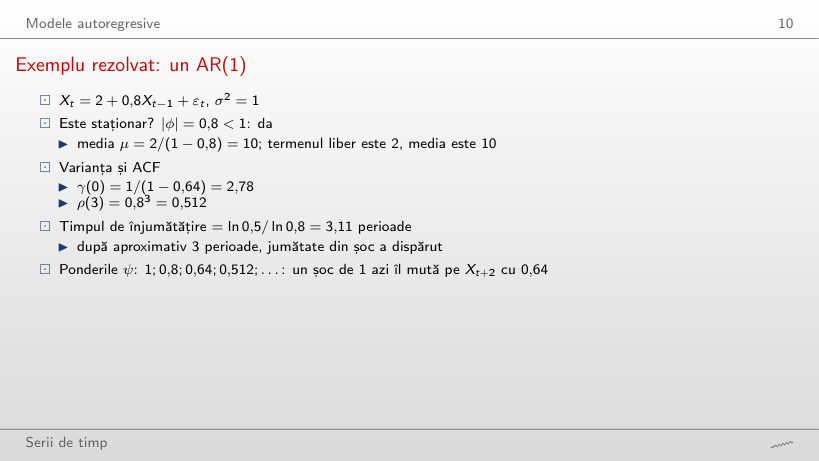
Exemplu rezolvat
Răspuns
Nu: μ = c/(1 − φ) = 2/0,2 = 10. Varianța este γ(0) = 1/(1 − 0,64) = 2,78, ρ(3) = 0,512, iar timpul de înjumătățire este 3,11 perioade. Cu același c și φ = 0,9, media urcă la 20, γ(0) la 5,26, iar timpul de înjumătățire la 6,58 perioade.
AR(1) pentru trei valori ale lui φ
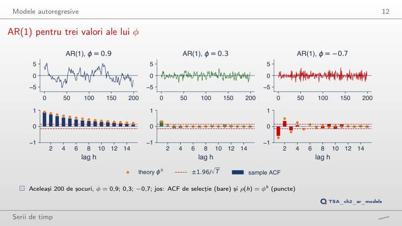
Răspuns
Cresc amîndouă: ρ̂(1) urcă de la 0,10 la 0,95, iar varianța de selecție de la 1,04 la 14,5. Varianța teoretică, 1/(1 − φ²), crește mai repede: 5,26 la φ = 0,9 și 50,3 la φ = 0,99. La φ = 0,9, eșantionul dă 4,98, sub valoarea teoretică: o traiectorie scurtă a unui proces persistent nu acoperă toată variația lui. Cu φ = −0,7 semnul autocorelațiilor alternează: ρ̂(1) = −0,58, ρ̂(2) = 0,34; la capătul cursei, cu φ = −0,77, ρ̂(1) = −0,66 și ρ̂(2) = 0,44.
Modelul AR(p) și polinomul lui caracteristic
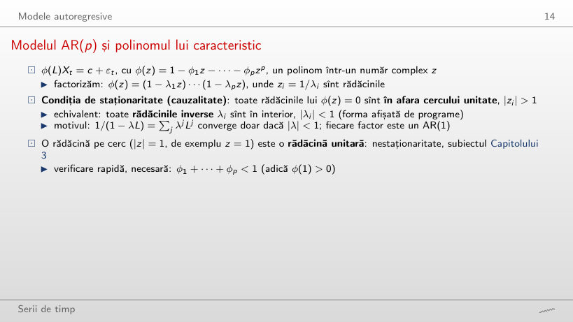
Exemplu rezolvat
Răspuns
Da. Discriminantul φ₁² + 4φ₂ = −1,4 este negativ, rădăcinile sînt complexe, 0,833 ± 0,986i, cu modulul 1,291 > 1 (rădăcinile inverse au modulul 0,775). Condițiile triunghiului sînt îndeplinite: 0,4 < 1, −1,6 < 1, 0,6 < 1. Invers, în exemplul C ambii coeficienți sînt sub 1, dar rădăcina 0,936 este în interiorul cercului unitate.
Trei procese AR(2) și petele solare
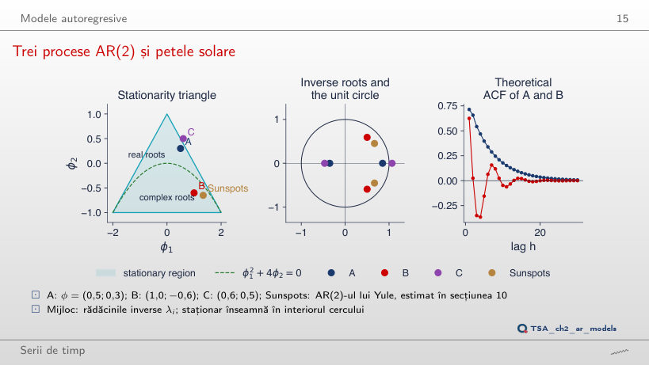
Răspuns
Nu. φ₁ + φ₂ = 1,1 > 1, deci punctul este în afara triunghiului. Rădăcinile polinomului 1 − 0,6z − 0,5z² sînt −2,14 și 0,936; a doua este în interiorul cercului unitate (rădăcina inversă are modulul 1,068). Staționaritatea se citește din rădăcini, nu din coeficienți luați separat. B are rădăcini complexe, 0,833 ± 0,986i, cu modulul 1,291: ACF este o undă cu perioada 7,2 laguri, amortizată cu 0,775 pe lag.
Modele de medie mobilă
MA(1): θ = 0,8 și θ = -0,8
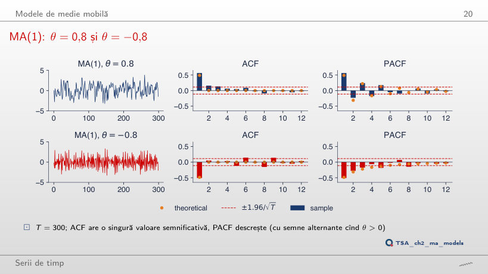
Răspuns
Nu. ρ(1) = θ/(1 + θ²) are maximul 0,5 la θ = 1 și scade apoi: la θ = 2 este 0,4, la fel ca la θ = 0,5. La θ = ±0,8, valorile teoretice sînt ±0,488, iar cele de selecție, cu T = 300, sînt 0,56 și −0,51. ACF are o singură valoare nenulă, iar PACF descrește: φ̂₂₂ = −0,23 pentru θ = 0,8.
Cea mai mare autocorelație a unui MA(1)
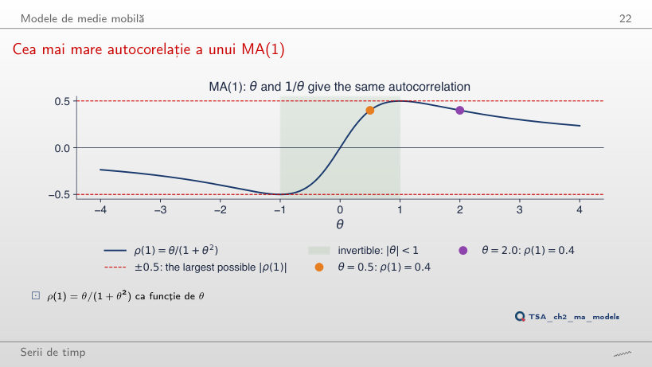
Răspuns
θ = 2 = 1/0,5. Cele două modele au aceeași ACF (cu σ² înmulțit cu θ²), deci datele nu le pot deosebi: o problemă de identificare. Convenția de invertibilitate, |θ| < 1, păstrează θ = 0,5.
Exemplu rezolvat: θ = 2 sau θ = 0,5?
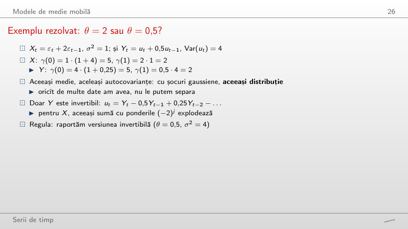
Exemplu rezolvat
Răspuns
Pentru |θ| < 1. La θ = 2 ponderile (−θ)j sînt 1; −2; 4; −8, … și ajung la 256 la j = 8: șocurile nu pot fi reconstituite din trecutul seriei. Reprezentarea pereche, θ = 0,5 cu σ² = 4, are ponderile 1; −0,5; 0,25, … și aceleași γ(0) = 5, γ(1) = 2.
Modele ARMA(p,q)
Ponderile ψ și răspunsul la impuls
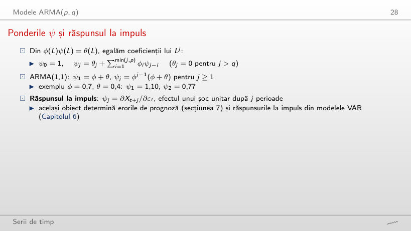
Exemplu rezolvat
Răspuns
Cinci, ψ₀…ψ₄: suma cumulată a pătratelor ajunge la 3,236, adică 95,9%; cu ψ₀…ψ₃ ajunge la 91,7%. Numai ψ₁² = 1,21 reprezintă 35,9%, mai mult decît șocul curent (ψ₀² = 1, 29,7%), pentru că ψ₁ = φ + θ = 1,10 > 1.
Răspunsurile la impuls ale a patru modele
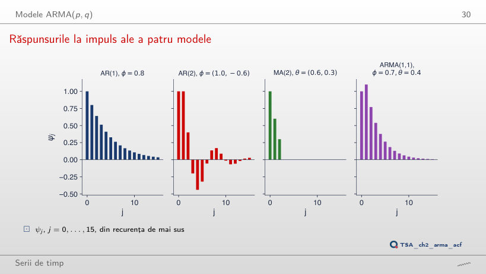
Răspuns
ψ₁ = φ + θ = 0,7 + 0,4 = 1,1: șocul de ieri intră o dată prin termenul MA și o dată prin partea AR. De la j = 2, ψⱼ = φψⱼ₋₁: 0,77; 0,54; 0,38. Suma Σψⱼ² = 3,37 este varianța procesului în unități σ². La MA(2) răspunsul este exact zero după două perioade, iar la AR(2) cu rădăcini complexe își schimbă semnul: ψ₃ = −0,20, ψ₄ = −0,44. Butonul ▶ dă primului coeficient al celor patru modele (θ₁ la MA(2)) aceeași valoare, de la 0 la 0,95 și înapoi la 0,7: la AR răspunsul se prelungește, la MA(2) rămîne zero după j = 2.
Momentele procesului ARMA(1,1)
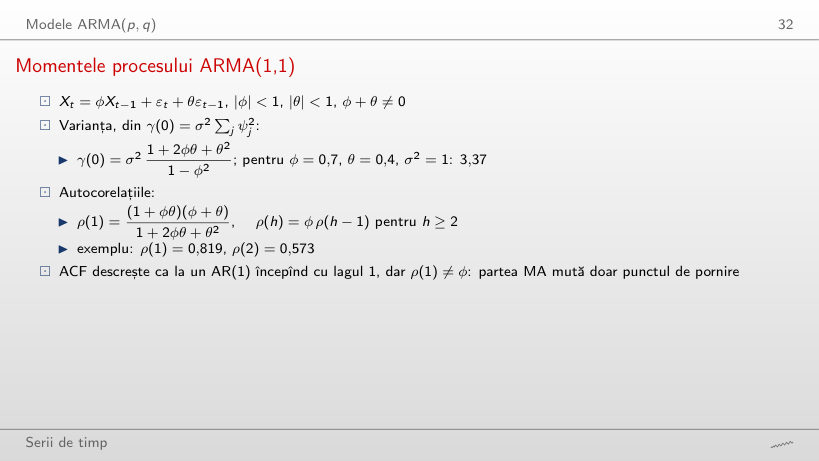
Exemplu rezolvat
Răspuns
Peste: ρ(1) = 0,819 > 0,7. Diferența ρ(1) − φ = θ(1 − φ²)/(1 + 2φθ + θ²) are semnul lui θ, deci cu θ = −0,4 ACF pornește sub φ: ρ(1) = 0,360, ρ(2) = 0,252, iar γ(0) scade de la 3,37 la 1,18. În ambele cazuri raportul ρ(h)/φh este constant (1,169, respectiv 0,514): după lagul 1 ACF descrește ca la un AR(1).
Identificarea: tabelul ACF–PACF
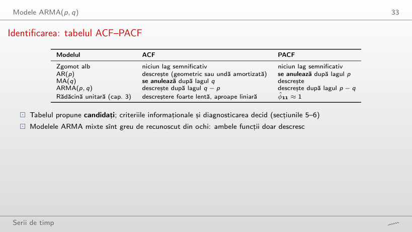
Răspuns
Da, pentru PACF: banda se lărgește la ±0,196 și PACF iese tot la lagurile 1 și 2. ACF iese la lagurile 1, 3, 4 și 5: descreșterea în formă de undă amortizată se vede și în eșantionul scurt. Pentru MA(2), cu T = 500, ACF iese la lagurile 1 și 2, iar PACF la lagurile 1–4: tabelul se citește invers.
ACF și PACF teoretice și de selecție
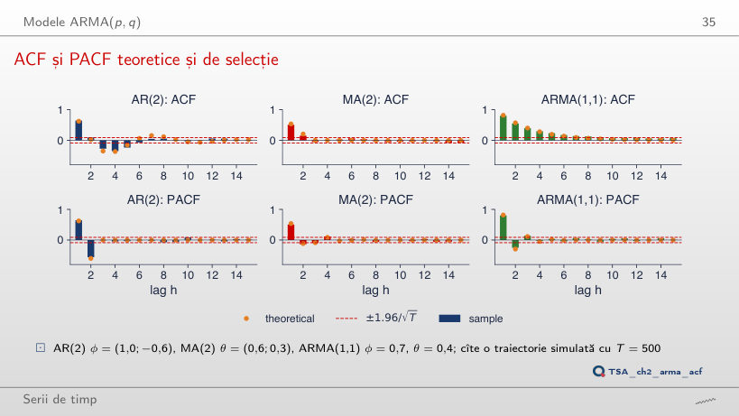
Răspuns
Banda se îngustează de la ±0,28 la ±0,09, iar valorile de selecție se apropie de cele teoretice. La T = 500, pentru AR(2), φ̂₂₂ = −0,56 față de φ₂₂ = −0,60; pentru MA(2), ρ̂(1) = 0,51 și ρ̂(2) = 0,15 față de 0,54 și 0,21. Cu eșantioane scurte, corelogramele unor modele diferite se pot confunda.
Estimarea
Exemplu rezolvat: Yule–Walker pentru creșterea PIB-ului României
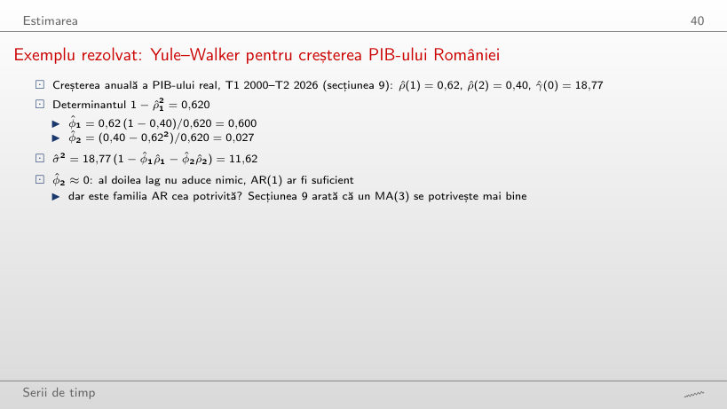
Exemplu rezolvat
Răspuns
0,620, calculată cu ρ̂₁ = 0,6167 nerotunjit; 0,616 vine din rotunjirea lui ρ̂₁ la 0,62. Cu valorile nerotunjite, φ̂₁ = 0,600, φ̂₂ = 0,027 și σ̂² = 11,74, ca în slide; cu 0,62 și 0,40 rotunjite ar ieși φ̂₁ = 0,604 și φ̂₂ = 0,025. Pe eșantionul care se oprește în T4 2019, φ̂₂ = 0,102.
Verosimilitatea maximă
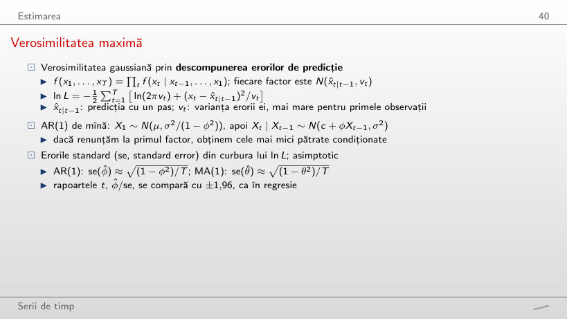
Exemplu rezolvat
Răspuns
Curbura: 0,076, față de 0,075 din formula asimptotică. Valoarea 0,085 este eroarea standard OPG (produsul exterior al gradienților), implicită în statsmodels. Concluzia nu se schimbă: φ̂ = 0,630, raportul t este 8,3 cu curbura, intervalul de 95% [0,481; 0,779].
Distribuțiile de selecție ale estimatorilor
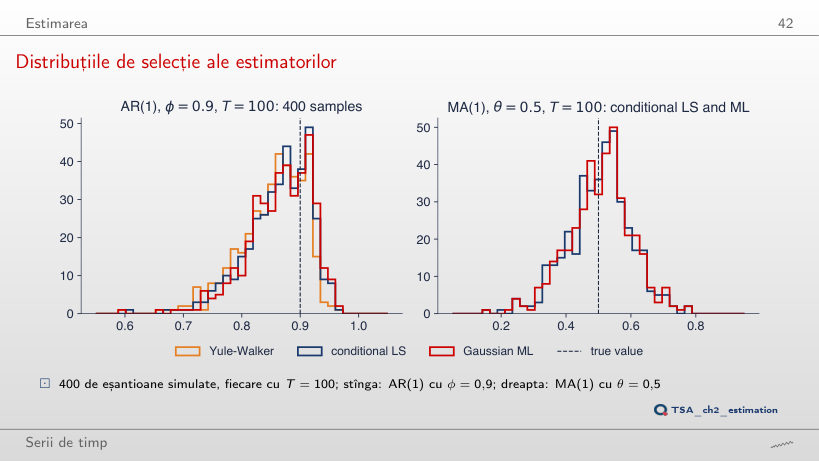
Răspuns
Nu. Mediile celor 400 de estimări sînt 0,853 (Yule–Walker), 0,864 (cele mai mici pătrate condiționate) și 0,866 (MLE), toate sub 0,9; aproximarea −(1 + 3φ)/T dă −0,037. Abaterile standard, 0,054–0,056, depășesc valoarea asimptotică 0,044. În simularea din browser cu T = 400, mediile urcă la 0,889–0,891. Pentru MA(1) cu θ = 0,5, mediile sînt 0,504 și 0,506.
Selecția modelului și diagnosticarea
Criterii informaționale
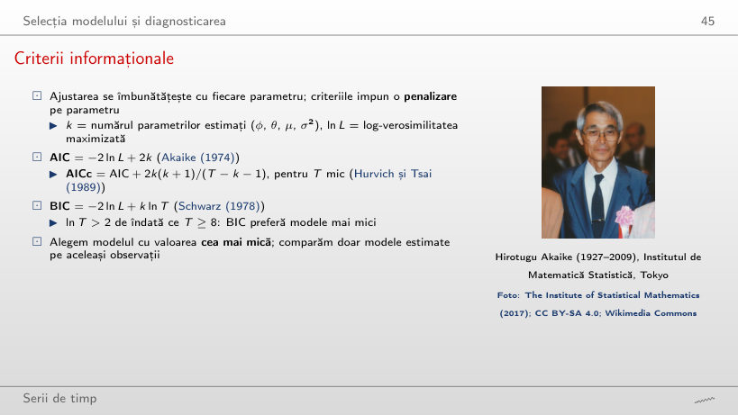
Exemplu rezolvat
Răspuns
Parametrul în plus costă 2 în AIC și ln 106 = 4,66 în BIC, iar −2 ln L scade doar cu 3,07. AIC scade deci cu 1,07 (548,97 față de 550,04), BIC crește cu 1,59 (564,95 față de 563,36). AICc, cu corecția pentru T mic, dă 549,82 și 550,64.
Cît de des găsesc AIC și BIC ordinul adevărat
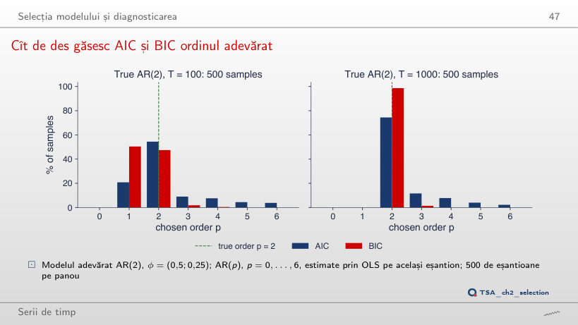
Răspuns
BIC, în 98,6% dintre eșantioane, față de 74,4% pentru AIC, care alege un ordin prea mare în 25,6% din cazuri. Cu T = 100 ordinea se inversează: AIC 54,4%, BIC 47,4%, iar BIC alege un model prea mic în 50,4% din cazuri, pentru că φ₂ = 0,25 este greu de detectat în 100 de observații.
Diagnosticarea reziduurilor
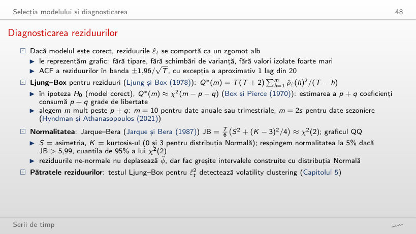
Exemplu rezolvat
Răspuns
Da: cu 8 − 1 = 7 grade de libertate p = 0,023; și cu 8 grade de libertate (greșit) p = 0,039. La MA(3), Q*(8) = 5,35 cu 5 grade de libertate dă p = 0,375, deci nu respingem. Normalitatea este respinsă pentru ambele: Jarque–Bera 25,9 pentru AR(1) și 39,0 pentru MA(3), peste 5,99.
Justificarea celor m - p - q grade de libertate
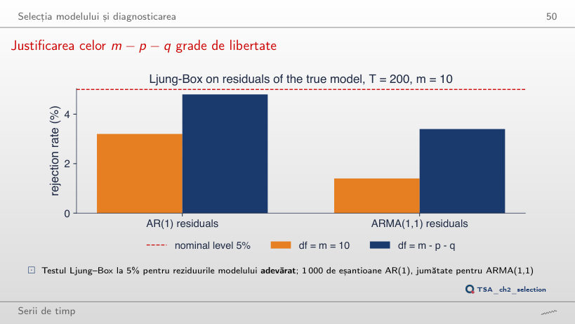
Răspuns
În 1,4% dintre eșantioane, nu în 5%: reziduurile estimate sînt mai puțin corelate decît un zgomot alb adevărat la primele laguri. Cu m − p − q = 8 grade de libertate, rata este 3,4%; pentru AR(1), 3,2% cu 10 și 4,8% cu 9. La m = 3 diferența crește: pentru ARMA(1,1), 0,2% cu 3 grade de libertate și 4,8% cu 1.
Prognoza cu modele ARMA
Exemplu rezolvat: prognoza unui AR(1)
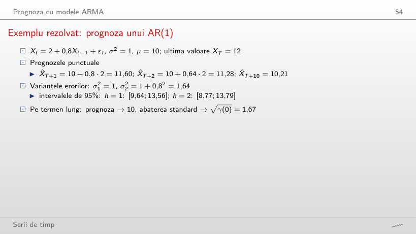
Exemplu rezolvat
Răspuns
Spre 2 × 1,96 × √γ(0) = 2 × 1,96 × 1,67 = 6,53. Lățimea este 3,92 la h = 1, 5,02 la h = 2 și 6,50 la h = 10: incertitudinea crește repede la primele orizonturi, apoi se stabilizează la cea necondiționată.
Revenirea la medie în prognoze
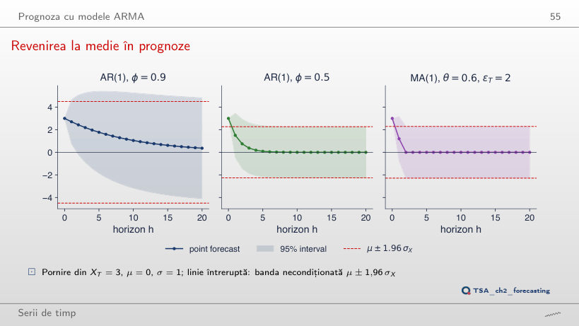
Răspuns
1,77 pentru φ = 0,9 (eroarea standard 1,85) și 0,094 pentru φ = 0,5, practic media. Intervalul tinde spre banda necondiționată μ ± 1,96σX, cu σX = 2,29 pentru φ = 0,9 și 1,15 pentru φ = 0,5. La MA(1), numai primul pas este informativ, θεT = 1,2; de la h = 2 prognoza este media și intervalul are lățimea de lungă durată. Butonul ▶ mută XT de la 3 la −4 și înapoi: prognozele AR(1) revin la medie din orice punct de plecare, iar intervalele nu se schimbă, pentru că erorile standard nu depind de XT.
Studiu de caz: creșterea PIB-ului României
Pasul 1: identificarea
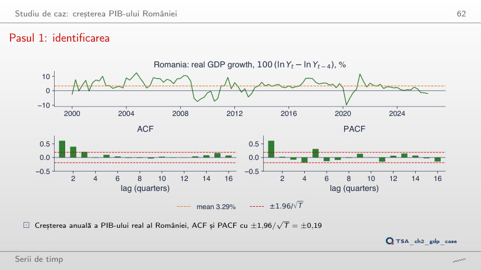
Răspuns
Da. Cu 80 de trimestre, primele autocorelații sînt 0,62; 0,45; 0,24, apoi 0,04 la lagul 4, sub banda de ±0,22. Pe tot eșantionul, cu 106 trimestre: 0,62; 0,40; 0,21 și −0,01. Tiparul vine din construcția seriei: rata anuală este suma a patru rate trimestriale, iar ratele consecutive au trei trimestre comune. Ljung–Box Q*(8) = 64,9 pe tot eșantionul.
Pasul 2: estimarea și criteriile informaționale
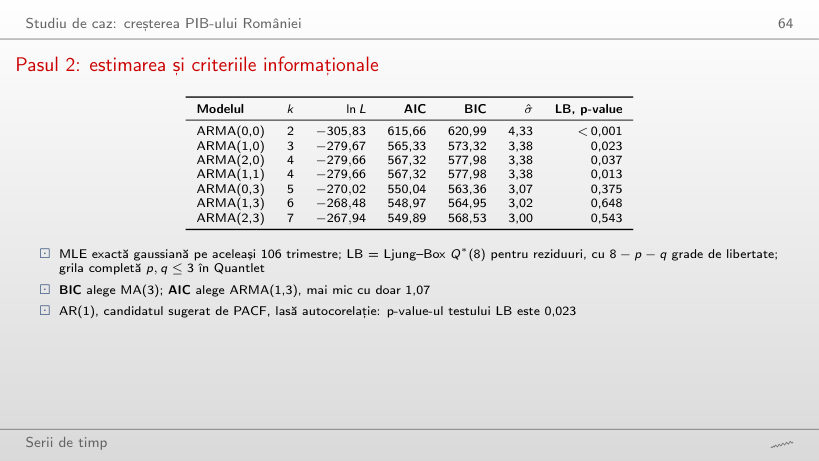
Răspuns
ARMA(1,3), cu AICc 549,82 față de 550,64 pentru MA(3), o diferență de 0,82. Pe AIC, ARMA(2,3) este al doilea, la 0,92 de minim, înaintea lui MA(3) (1,07), iar ARMA(3,3) este la 2,37. Pe BIC, MA(3) are 563,36, iar ARMA(1,3) îl urmează la 1,59.
Interpretarea modelului MA(3) estimat
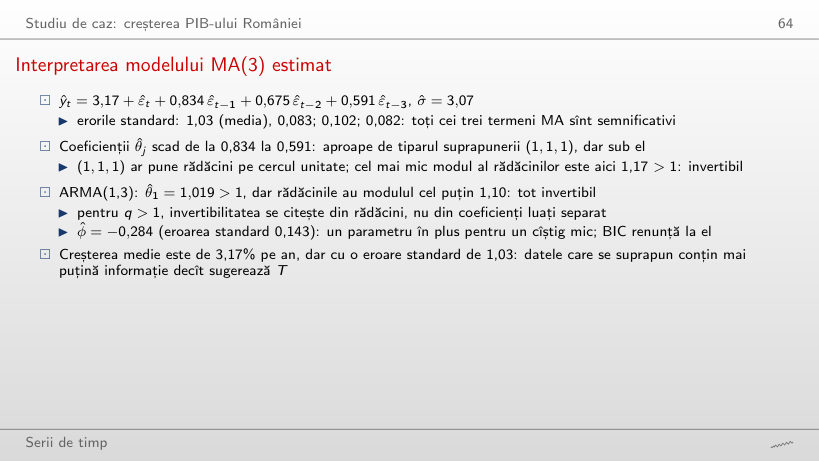
Exemplu rezolvat
Răspuns
Da: rădăcinile polinomului θ(z) au modulele 1,102; 1,181; 1,181, toate peste 1. Pentru q > 1 invertibilitatea se citește din rădăcini, nu din coeficienți luați separat. Coeficientul AR, φ̂ = −0,284 cu se 0,143, are raportul t −1,98, abia peste pragul de 1,96.
Pasul 3: diagnosticarea modelului MA(3)
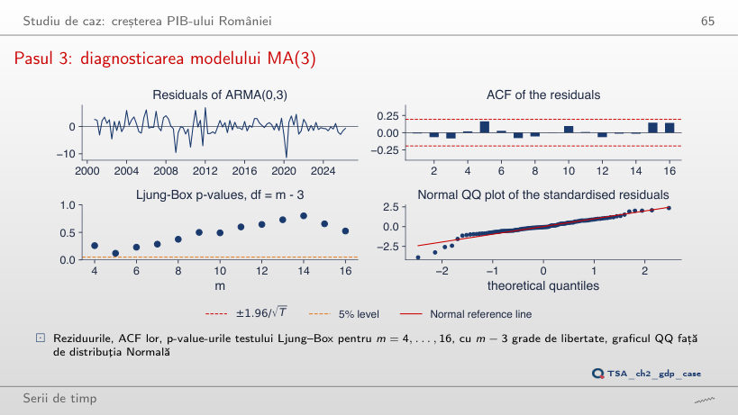
Răspuns
0,720, o concluzie prea liniștitoare: gradele de libertate trebuie reduse cu numărul parametrilor ARMA estimați. Reziduurile nu sînt Normale: Jarque–Bera 39,0, p < 0,001, asimetria −0,75, kurtosis-ul 5,61; cel mai mare reziduu, −11,4 în T2 2020, are −3,89 abateri standard. AR(1) lasă corelație în reziduuri: Q*(8) = 16,2 cu 7 grade de libertate, p = 0,023.
Pasul 4: prognozele
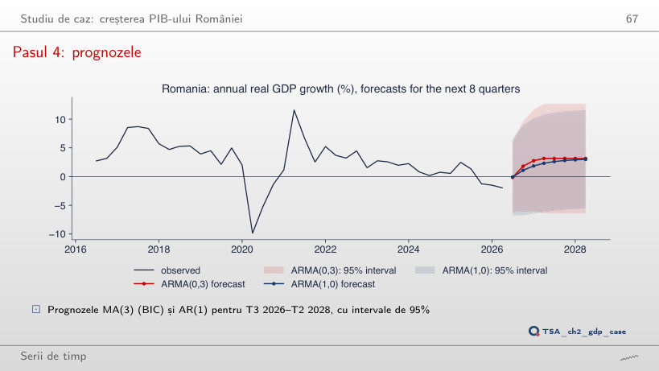
Răspuns
De la al patrulea trimestru: −0,14; 1,81; 2,77, apoi media de 3,17%. După q = 3 pași modelul cunoaște doar media. AR(1) revine treptat: 2,99% după 8 trimestre, cu media 3,12%. Intervalele de 95% sînt [−6,1; 5,9] pentru un trimestru și [−6,3; 12,7] de la patru trimestre. Cu originea în T4 2019, ambele modele prognozează peste 3,8% pentru 2020, iar seria scade la −9,9% în T2 2020.
Interpretarea prognozelor PIB
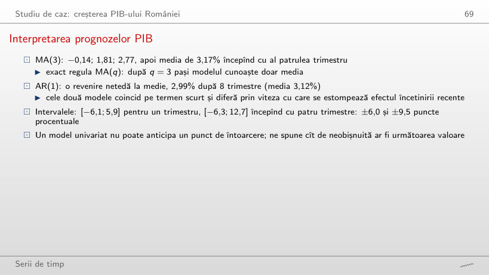
Exemplu rezolvat
Răspuns
La MA(3), ψj = 0 pentru j > 3, deci σh rămîne σ̂√(1 + θ̂₁² + θ̂₂² + θ̂₃²) = 3,07 × √2,50 = 4,85 de la h = 4. La AR(1), σh crește de la 3,38 la 4,35 la h = 8. Lățimea intervalului de 95% trece de la 12,0 la 19,0 pentru MA(3) și de la 13,2 la 17,0 pentru AR(1). Cu originea în T4 2019, RMSE pe cele 8 trimestre observate este 7,41 pentru MA(3) și 7,06 pentru AR(1).
Alte serii reale
Inflația în România: o prognoză AR(2)
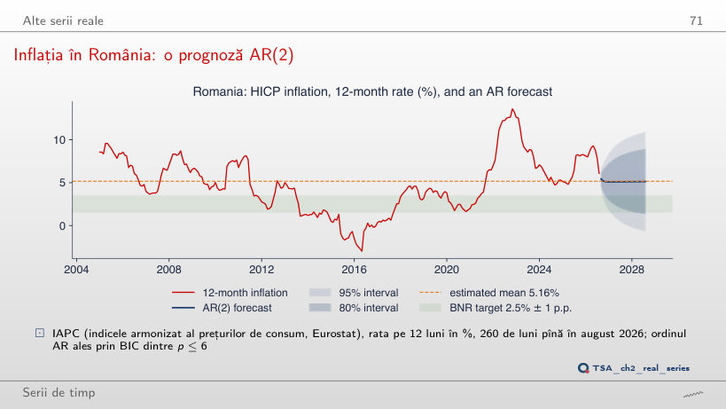
Răspuns
Spre media estimată, 5,16%, care este media perioadei 2005–2026, nu spre ținta de 2,5%: de la 6,09% în august 2026 la 5,44% în septembrie și 5,13% în august 2028. φ̂₁ + φ̂₂ = 0,976, iar cea mai mare rădăcină inversă are modulul 0,963, deci revenirea este lentă. Testul Ljung–Box pe reziduuri respinge: Q*(12) = 71,6 cu 10 grade de libertate, p < 0,001.
Randamente zilnice: BET și EUR/RON
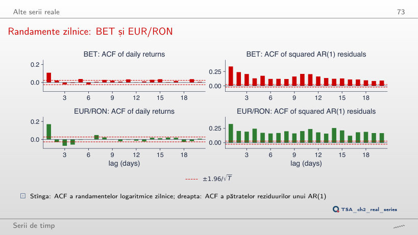
Răspuns
Nu: R² este 1,2% pentru BET și 2,9% pentru EUR/RON. Rezultatul este real din punct de vedere statistic, dar mic din punct de vedere economic. Pătratele reziduurilor sînt puternic autocorelate (Ljung–Box Q*(10) = 2496 pentru BET și 2351 pentru EUR/RON), iar kurtosis-ul reziduurilor este 14,0 și 17,0: modelul descrie media, nu varianța.
Interpretarea modelului AR(1) pentru randamentele zilnice
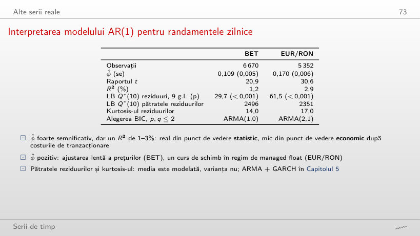
Exemplu rezolvat
Răspuns
Nu. Eroarea standard din slide, 0,0052, este cea OPG, implicită în statsmodels; eroarea standard clasică, din curbura log-verosimilității, este 0,0122, apropiată de √((1 − φ̂²)/T) = 0,0122, iar raportul t este 9,0. Pentru EUR/RON, 12,6 în loc de 30,6. Coeficienții rămîn foarte semnificativi, dar R² este 1,2%, respectiv 2,9%.
Petele solare: AR(2) și criteriile informaționale
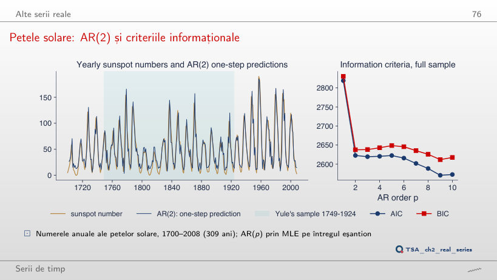
Răspuns
10,6 ani. Coeficienții estimați, φ̂₁ = 1,336 și φ̂₂ = −0,650, dau rădăcini complexe; perioada este 2π/arccos(φ̂₁/(2√−φ̂₂)) = 10,6, iar modulul rădăcinii inverse 0,806. Pe întregul eșantion, AR(2) explică 83% din varianță cu un an înainte, iar AIC și BIC aleg amîndouă p = 9 dintre p ≤ 10.
Simulări: șocuri din distribuția Normală, generate cu seed-urile codului capitolului; cînd parametrii diferă de cei din curs, simularea se reface în browser. PIB: Eurostat, volume înlănțuite (2010), serie nesezonalizată, în versiunea folosită în curs. IAPC: Eurostat, pînă în august 2026. BET: EODHD; EUR/RON: cursul de referință BNR. Petele solare: setul de date din statsmodels, 1700–2008.